Историята на човешкия полет е приказка за дързост, гениалност и неуморим устрем.
Всичко започва от една мечта — да полетим като птиците, за да достигнем днес до границите на космоса.
Ето как се развива тази невероятна история през ключовите и най-любопитни моменти от нейното начало до ерата на свръхзвуковите скорости:
1. Мечтата за птичи полет: Леонардо да Винчи (1485 г.)
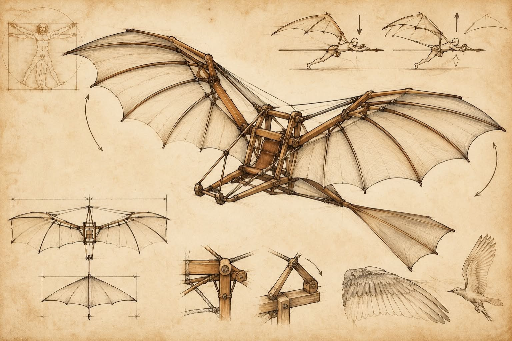
Всичко започва в ренесансова Италия, където геният Леонардо да Винчи прекарва години в изучаване на анатомията на птиците. Около 1485 г. той проектира орнитокоптера — машина с махащи криле, задвижвана от мускулната сила на човека.
ФАКТ: Макар проектът да остава само на хартия, тъй като човешките мускули са твърде слаби, за да издигнат подобна конструкция, чертежите на Леонардо полагат основите на съвременната аеродинамика.
2. Първото издигане: Братята Монголфие (1783 г.)
ИНТЕРЕСЕН ФАКТ: Първите живи пътници в балона не са хора, а една овца, една патица и един петел Крал Луи XVI искал да провери как
височината влияе на дишането, преди да рискува човешки живот. Животните оцеляват без драскотина.
3. Раждането на авиацията: Братята Райт (1903 г.)
Мечтата за контролиран полет с двигател става реалност на 17 декември 1903 г. в Кит Сейнт Хоук, Северна Каролин.
Американските братя Орвил и Уилбър Райт извършват първия в историята успешен полет със самолета "Flyer I".
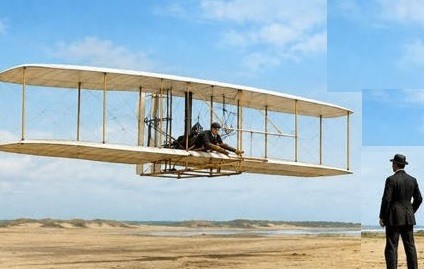
ИНТЕРЕСЕН ФАКТ: Първият полет, пилотиран от Орвил, продължава едва 12 секунди и изминава разстояние от 37 метра — дължина, по-къса от разпереността на крилата на модерен самолет.
Българският принос
Асен Йорданов е български авиоконструктор, летец и изобретател, който още като млад проявява голям интерес към летенето.
През 1912 г., едва 16-годишен, той се включва в авиационното дело по време на Балканската война.Тогава той прави опити с построен от него безмоторен планер.
Първият му моторен самолет „Йорданов-1“ е изпитан на 10 август 1915 г.
По-късно заминава за САЩ, където става един от известните авиационни конструктори и допринася за развитието на самолетостроенето.
Асен Йорданов доказва, че българските изобретатели могат да оставят следа в световната история на авиацията.
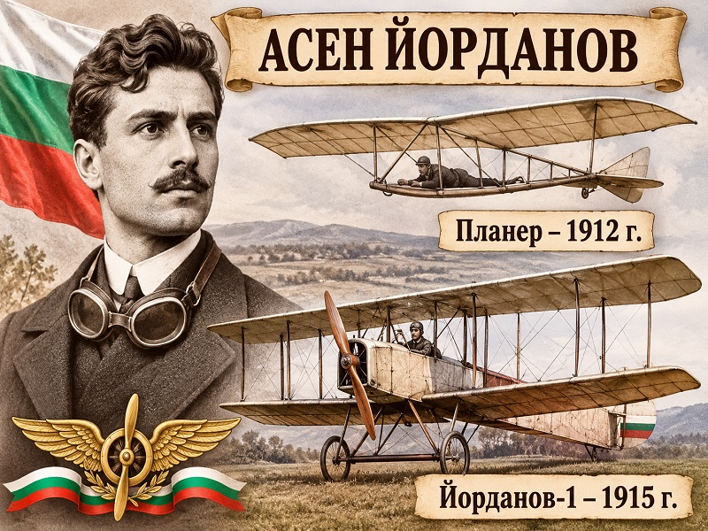
4. Векът на реактивната ера (40-те и 50-те години на XX век)
Втората световна война ускорява технологиите и витловите самолети отстъпват място на реактивните двигатели.
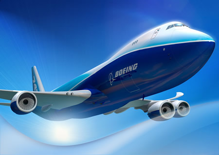
Boeing 747
През 1947 г. американският пилот
Чък Йегър за първи път преодолява звуковата бариера (Мах 1) със самолета Bell X-1.
5. Върхът на лукса и скоростта: Конкорд (1969 - 2003 г.)
Историята достига своя технологичен триумф през 1969 г. с първия полет на Конкорд (Concorde) — съвместно инженерно чудо на Франция и Великобритания.
Този елегантен англо-френски самолет превръща свръхзвуковото пътуване в реалност за пътниците от 1976 г. нататък.
ИНТЕРЕСЕН ФАКТ: Конкорд лети със зашеметяващата скорост от 2180 км/ч (Мах 2.04) на височина до 18 300 метра.
Той изминава разстоянието от Лондон до Ню Йорк за по-малко от 3.5 часа (вместо обичайните 8).
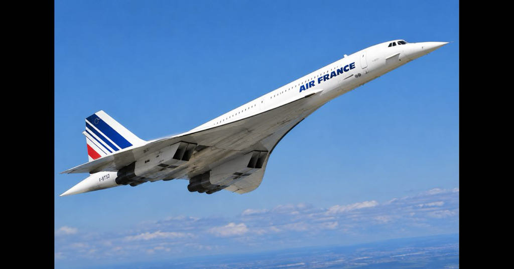
Пътниците буквално изпреварват времето: поради часовата разлика те кацат в Америка в час, по-ранен от този, в който са излетели от Европа!
КРАЯТ НА ЕДНА ЕРА: Поради високите разходи за поддръжка, огромния разход на гориво и променящия се пазар,
Конкорд извършва последния си търговски полет през 2003 г., слагайки край (засега) на пътническата свръхзвукова авиация.
Мечтателят
Всичко започва с един почти глух учител по математика от Калуга.
През 1903 г. Константин Циолковски публикува уравнението, което носи името му и показва как ракетата може да се движи в безвъздушното пространство.
Той предлага течното гориво и многостепенните ракети.
Паралелно с него Робърт Годард в САЩ изстрелва първата ракета с течно гориво през 1926 г., а Херман Оберт в Германия развива теорията.
От тази работа се ражда V-2, а след войната нейните конструктори, и най-вече Вернер фон Браун, дават началото на американската ракетна програма.
В СССР Сергей Корольов изгражда съветската.
Състезанието
На 4 октомври 1957 г. СССР изстрелва „Спутник-1", първия изкуствен спътник на Земята.
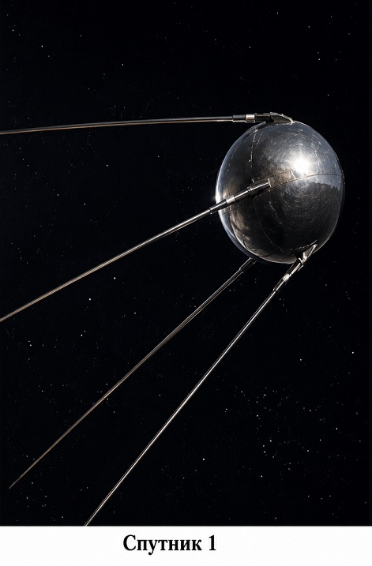
Месец по-късно в орбита излиза Лайка, първото живо същество там. На 12 април 1961 г. Юрий Гагарин прави първия орбитален полет и казва едно кратко „Поехали!”.
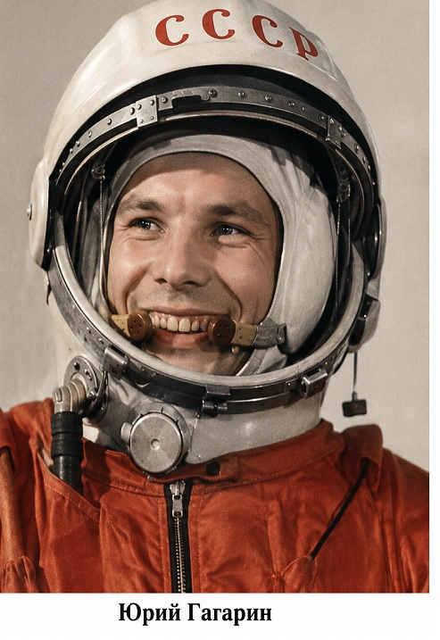
През 1963 г. Валентина Терешкова става първата жена в космоса, а през 1965 г. Алексей Леонов излиза в открития космос.
Луната
През 1959 г. съветската „Луна-2" достига лунната повърхност, а „Луна-3" снима обратната ѝ страна.
Президентът Кенеди обещава човек на Луната до края на десетилетието и на 20 юли 1969 г. „Аполо 11" изпълнява обещанието.
Нийл Армстронг прави първата човешка стъпка.
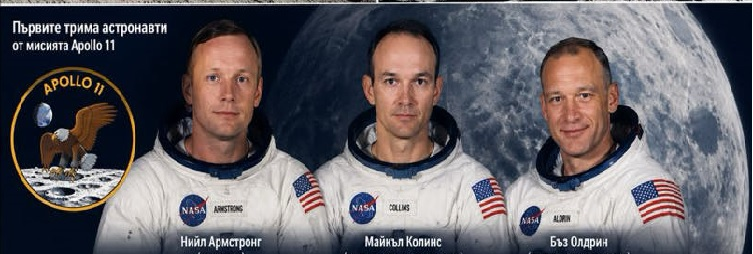
Спътниците
Идеята за геостационарната орбита идва от Артър Кларк, който през 1945 г. описва спътник на около 35 786 км височина,
чийто обиходен период съвпада със завъртането на Земята и който затова „виси" над една точка.
Те пренасят телевизията и връзката, следят времето и дават на всички ни навигация, например чрез GPS.
Станциите
През 1971 г. СССР пуска „Салют-1", първата космическа станция, следва американският „Скайлаб", а през 1986 г. влиза в орбита „Мир"
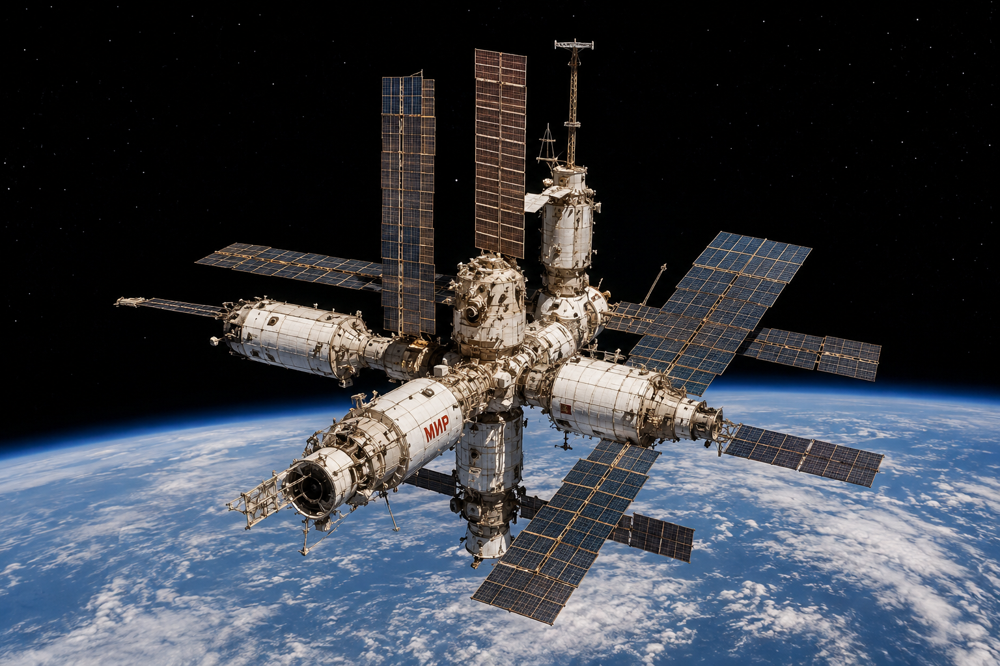
Към далечните светове. Междувременно автоматите стигат там, където хората още не могат.
През 1977 г. излитат „Вояджър 1" и „Вояджър 2". Те изследват Юпитер и Сатурн, а „Вояджър 2" посещава и Уран и Нептун.
„Вояджър 1" напуска хелиосферата през 2012 г. и е най-отдалеченият създаден от човека обект, като все още праща данни.
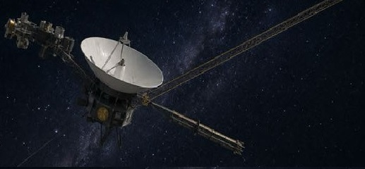
Марс
Първите успешни кацания са на съветските „Марс-3" през 1971 г. (с кратка връзка) и американските „Викинг" през 1976 г.
През 1997 г. „Соджърнър" става първият марсоход, а след него „Спирит", „Опортюнити", „Кюриосити" и „Пърсевиърънс" (2021 г.) превръщат
Червената планета в лаборатория.
Днес
Програмата „Артемида" цели връщане на хора на Луната и дългосрочно присъствие там.
Частните компании като SpaceX, с многократно използваемите си ракети, рязко намаляват цената на изстрелването.
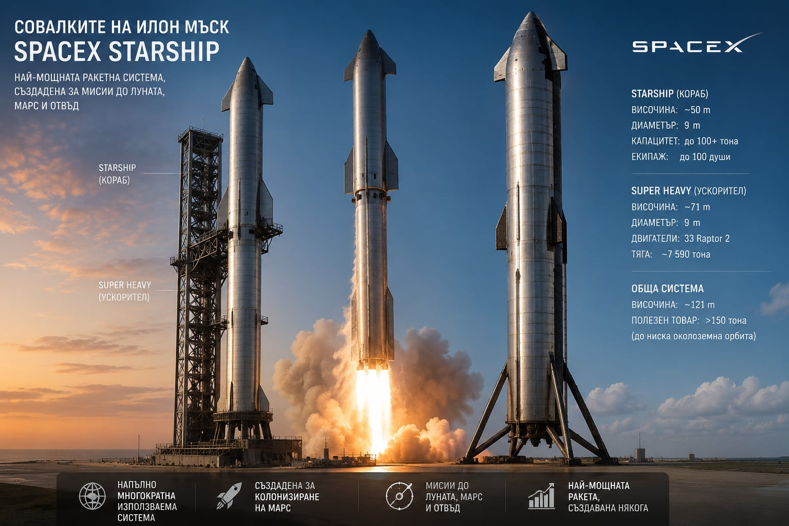
Космическата станция „Мир“
Рекорди по продължителност на престой в орбита:
437,7 дни — Валери Поляков (1994–1995)
742 дни — Сергей Авдеев (до 27 август 1999 г.)